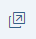

Step 1: Browser Developer Tools
In this step, you will learn how to use your browser's developers tools to troubleshoot your SAPUI5 app.
Most modern web browsers contain some form of Developer Tools. They allow you to examine the details of the current web page. You can also use them to debug JavaScript code, analyze network performance, live-edit DOM elements, and much more. As an example, we will show you how to use the Developer Tools in Google Chrome. Other browsers have similar capabilities, and you can easily adapt the examples shown here to these browsers.
-
Download the example app with errors from the Demo Kit at Troubleshooting and run the app.
NoteIf you run the app within the Demo Kit frame, this step will not work as described. Open the app in a new tab first with .
-
Open the Developer Tools by pressing F12.
-
Activate the Inspect Element mode by pressing Ctrl + Shift + C .
-
Click the Do Something button in the app.
The DOM tree in the Elements tab highlights the button's DOM element. Depending on which part of the button (icon or text) you clicked, different HTML tags are highlighted.
-
Search for the following line:
<button id="HeapOfShards---app--myButton" data-sap-ui="HeapOfShards---app--myButton" aria-describedby="__text1" class="sapMBtn sapMBtnBase sapMBtnInverted"> </button>
The Styles section in the panel on the right shows the active and overruled (striked-through) CSS styles for the DOM element that is currently selected.
-
In the Styles section, switch to the Computed tab.
You can see that the margin of the button is set to 0px.
-
In the context menu of the element, choose Edit as HTML and add sapUiLargeMargin to the class section of the button tag.
You can immediately see the effect on the web page.
The edited element should now look like this:<button id="HeapOfShards---app--myButton" data-sap-ui="HeapOfShards---app--myButton" aria-describedby="__text1" class="sapMBtn sapMBtnBase sapMBtnInverted sapUiLargeMargin"> </button>
-
In the Styles section, switch again to the Computed tab.
You can see that the margin of the button is now set to 48px.
Interacting with the document
-
Switch to the Console tab and enter $("#HeapOfShards---app--myButton")
The console displays the DOM element structure of the button:Q.fn.init [button#HeapOfShards---app--myButton.sapMBtn.sapMBtnBase.sapMBtnInverted, context: document, selector: "#HeapOfShards---app--myButton"]
-
Examine the button element by expanding the structure.
-
In the Console tab, enter myView=sap.ui.getCore().byId("HeapOfShards---app").
-
In the Console tab, enter myView.byId("myButton").
The console displays the SAPUI5 structure of the button control:f {bAllowTextSelection: true, mEventRegistry: {…}, sId: "HeapOfShards---app--myButton", mProperties: PropertyBag, mAggregations: {…}, …}Examine the SAPUI5 structure by expanding it.
|
SAPUI5 Control |
DOM Element |
|---|---|
|
sap.ui.getCore().byId("HeapOfShards---app--myButton") |
$("#HeapOfShards---app--myButton") |
Watching messages
-
Switch to the Console tab.
-
Click the Do Something button in the app.
A MessageToast appears with the text Sorry, an error occurred!.
-
In the console, you see the following error message:
TypeError: oEvent.getSourceXYZ is not a function at f.onPress (http://.../App.controller.js?eval:20:69) ...
This means that an error occurred in the onPress function in the App.controller.js file at line 20.
-
Click the first link in the stack trace after f.onPress to look at the source code where you can see that it wasn't the generic getSource function that was called, but an undefined getSourceXYZ.
sMessage = this.getResourceBundle().getText("buttonOk", [oEvent.getSourceXYZ().getId()])
-
Switch to the Source tab.
-
To view the source of the App.controller file, press Ctrl + P , enter App.controller, and select App.controller.js?eval.
-
Set a breakpoint in line 20 by clicking on the line number of the following line:
sMessage = this.getResourceBundle().getText("buttonOk", [oEvent.getSourceXYZ().getId()]); -
Click the Do Something button in the app.
The debugger stops at line 20.
-
In line 20, replace getSourceXYZ() with getSource() and press Ctrl + S :
sMessage = this.getResourceBundle().getText("buttonOk", [oEvent.getSourceXYZ().getId()]); -
Resume the execution of the code by pressing F8.
The message toast is now displayed on the web page with the following message: "HeapOfShards---app--myButton" pressed
You can also use the Pause on exception button and select Pause on caught exceptions on the top right of the Sources tab to pause the execution before an exception occurs without setting breakpoints.
The Network tab shows the sequence and duration of files being loaded. It can be used to optimize loading performance and debug request issues.
-
Switch to the Network tab.
-
Press F5 to reload the page.
You see a list of the files that are currently loaded.
You can see that the NavigationBar.js file is loaded, but the view does not contain any NavigationBar elements so it is not used.
-
You can't edit the code directly in this tab. You have to fix the source files in your development environment and then reload the app.
Remove the unnecessary reference to the NavigationBar in the App.controller file:sap.ui.define([ "sap/ui/core/mvc/Controller", 'sap/m/MessageToast', 'sap/ui/ux3/NavigationBar', 'jquery.sap.global' ], function(Controller, MessageToast, NavigationBar, jQuery) { ...
Switch to Device mode by clicking the respective button or by pressing Ctrl + Shift + M .
Emulate different mobile devices by selecting different devices, or switch orientation from landscape to portrait.
-
Memory or Profiles
-
Performance or Timeline
-
Application or Resources